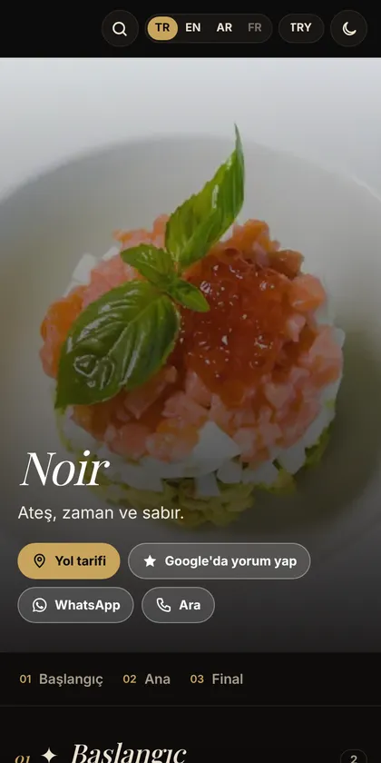

İştah açan fotoğraflar
Her ürüne fotoğraf ve kısa video.
AuraMenu dijital menü; büyük ürün fotoğrafları, açıklamalar, fiyatlar, içerik ve alerjen bilgisiyle misafirine net bir deneyim sunar. Restoranının kimliğine uygun 30 tasarımdan birini seç.

Her ürüne fotoğraf ve kısa video.
14 alerjen, net içerik listesi.
Büyük menülerde bile saniyeler içinde bul.
QR kod, dijital menüyü açmanın bir yoludur. AuraMenu'de aynı menü QR kod, NFC kart veya bağlantıyla açılır.
Evet. AuraMenu Studio'dan ürün, fiyat, fotoğraf, stok durumu ve tasarımı kendin değiştirirsin.